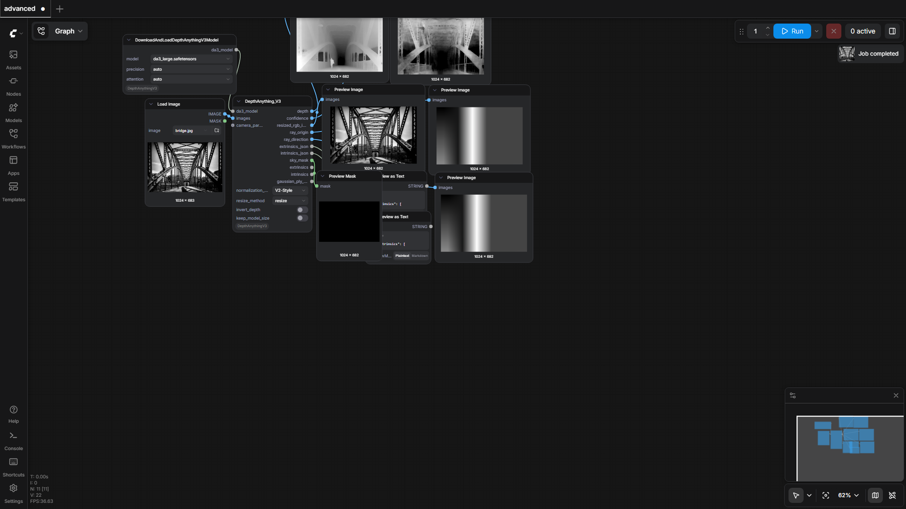
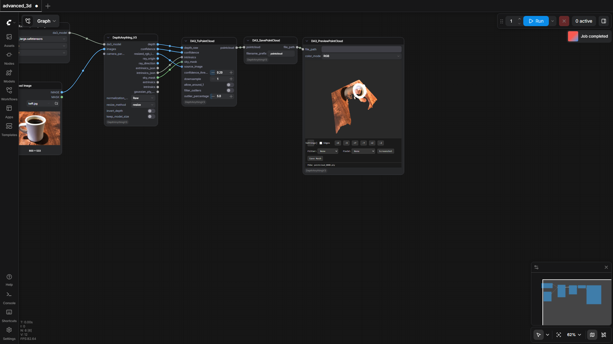
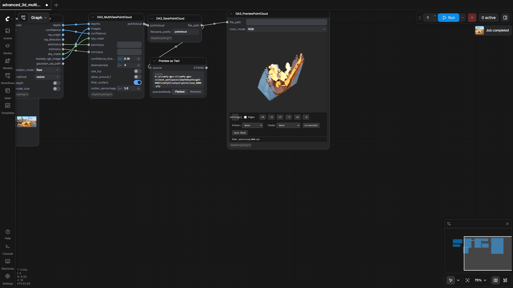
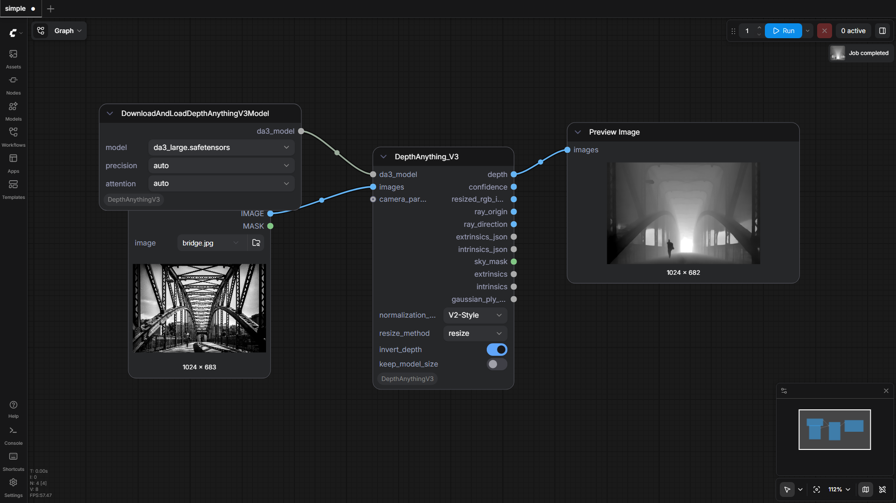

PozzettiAndrea/ComfyUI-DepthAnythingV3
Test Results
2026-05-15 09:18 UTC
Windows-10-10.0.26100-SP0
AMD64 Family 25 Model 1 Stepping 1, AuthenticAMD
100.0%
4 passed
4/4 tests
Workflows
Grid
List

advanced
pass
104.17s

advanced_3d
pass
51.72s

advanced_3d_multiview
pass
191.13s

simple
pass
78.89s
Downloaded Models
4 files · 1.5 GB
models/depthanything3/
1.5 GB
da3_large.safetensors
1.5 GB
.cache\huggingface\CACHEDIR.TAG
195.0 B
.cache\huggingface\download\model.safetensors.metadata
126.0 B
.cache\huggingface\.gitignore
1.0 B
×
‹
›
0.0s / 0.0s
Resource Usage
RAM (GB)
VRAM (GB)